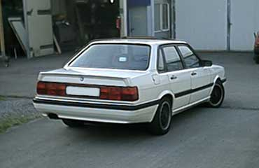

Extras
- SSD
- Sportsitze
- NSW
Motor
- 5 Zylinder Reihenmotor 100 kW (136 PS)
Abgasanlage
- Serie
Bremse
- 4 x Scheibe, VA innenbelüftet
Felgen / Reifen
- 195 / 60 - R14
Fahrwerk
- Bilstein Sportdämpfer 40mm gekürzt
- Eibach Federn 40 mm
Sonstige Umbauten
Außen
- rote Audi 200 Rückleuchten
- schwarze Frontscheinwerfer
Innen
- Bestuhlung mit schwarzem Leder und Alcatara bezogen
Musikanlage
- JVC CD-Tuner & 12fach Wechsler
- Front: 16er Next 2-Wege-System
- Heck: 20er NoName 3-Wege-System
- Alpine Flex4 Endstufe
Kontakt
markus@vwclubms.de